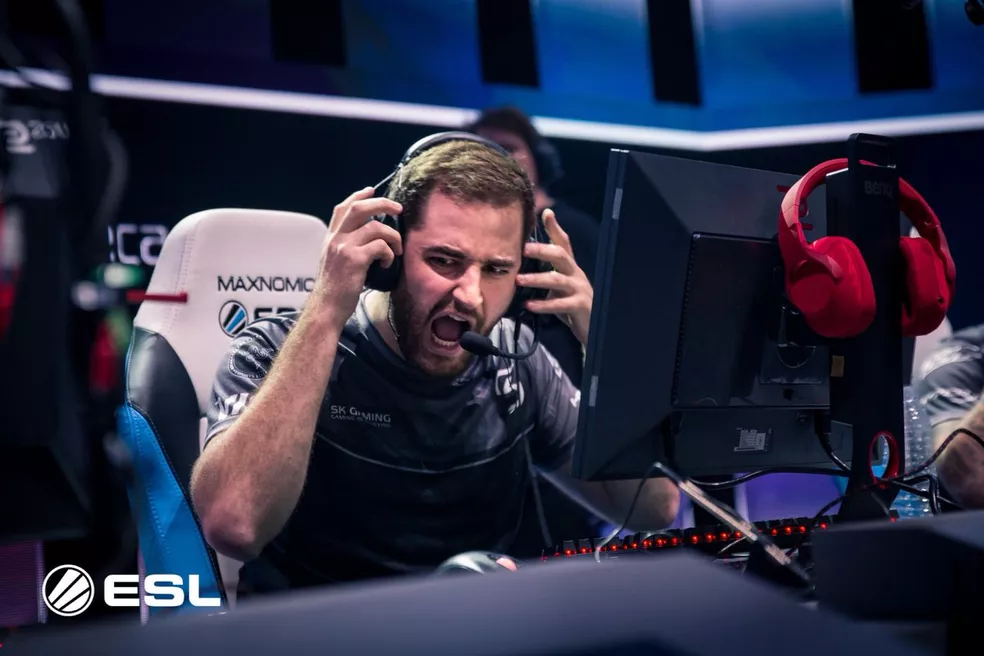
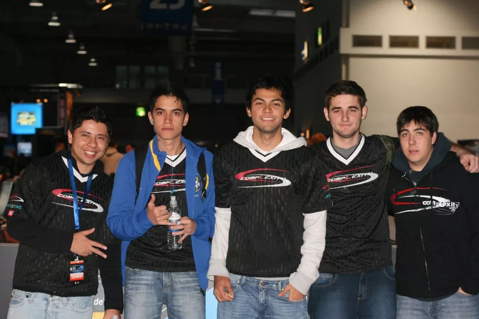
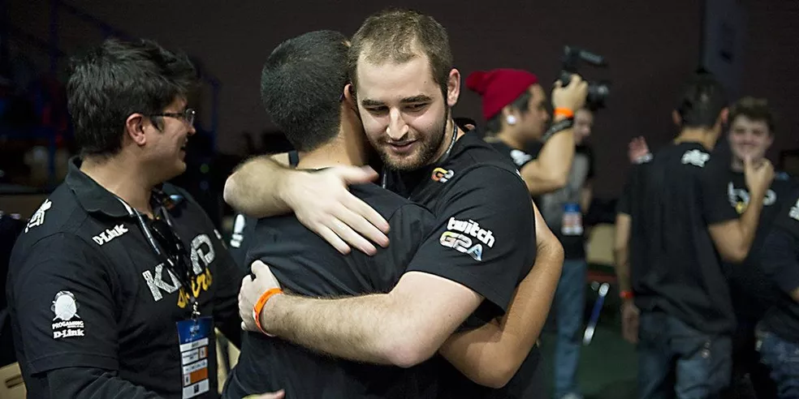
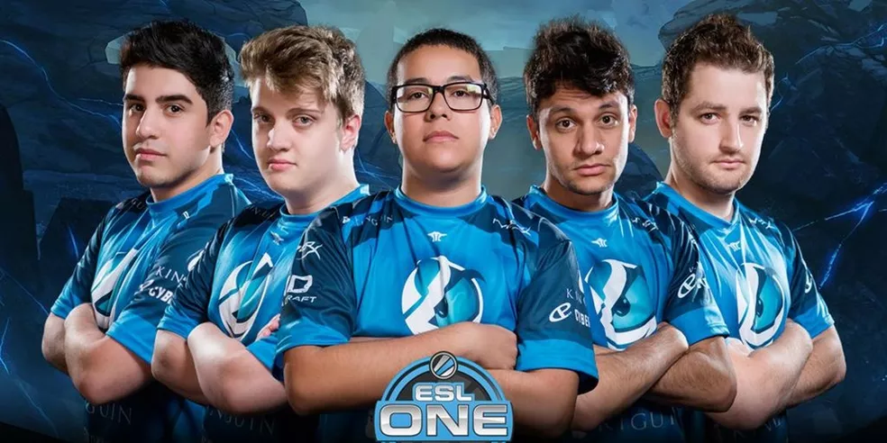
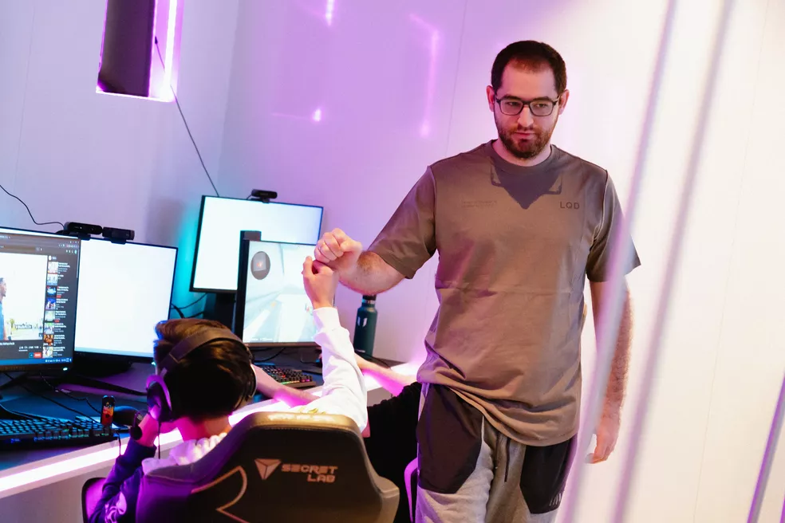

Dinheiro não é sinônimo de sucesso em alguns casos, mas quando se trata de Gabriel "FalleN" Toledo, dá pra dizer que uma coisa leva a outra. Dono de uma reputação inestimável dentro do cenário competitivo do Counter-Strike: Global Offensive, FalleN é considerado uma lenda não só do FPS da Valve, mas do edsport brasileiro. Em cima de um talento nato, o paulista de Itararé construiu um império, mais lucrativo que qualquer outro no país.
Segundo o site Esports Earnings, FalleN é o pro player brasileiro que mais faturou com esports: sua fortuna conquistada em competições ultrapassa a marca dos US$ 1,1 milhão (cerca de R$ 5,9 milhões), em uma carreira que em 2021 completou 18 anos. Ao longo de duas versões diferentes do CS (1.6 e Global Offensive) e com 30 anos, FalleN coletou títulos e cravou seu nome na história como um dos AWPers mais talentosos do mundo; algo que provavelmente ele não imaginaria ao começar a jogar, aos 12 anos de idade.
A família do pequeno Gabriel era dona de uma loja de informática; isso teria feito crescer o interesse do mais famoso itararense do Brasil, que não demorou a encontrar sua primeira equipe de CS 1.6, a Soldiers of Fire. Porém, apenas em 2005 ele conquistaria notoriedade, participando das eliminatórias presenciais do World Cyber Games (WCG). Ele ainda participaria de mais duas etapas do tipo com a Crashers, em 2007 e 2008, mas só em 2009 conquistou a classificação para o torneio mundial, junto da Fire Gamers, de grandes nomes como Lincoln "fnx" e Arthur "prd".
Em 2010, FalleN e a Fire Gamers conquistaram o título panamericano da WCG, tendo também participado das etapas mundiais de 2010 e 2011, além da Electronic Sports World Cup (ESWC) de 2010 e 2011. Ele ainda passaria pela compLexity Gaming, Mandic, semXorah e playArt entre 2010 e 2013, antes do cenário de CS transitar da versão 1.6 para o Global Offensive, o que obrigou FalleN a se afastar das competições para se aprimorar na nova versão do jogo.
Desde o 1.6, FalleN sempre dedicou seu tempo a elevar seu talento operando a AWP, poderoso rifle de precisão. Ter um bom AWPer é essencial para qualquer equipe de Counter-Strike, e foi com essa qualidade que ele se destacou, tomando a liderança dos times por onde passou, se colocando também como um dos mais condecorados capitães do CS:GO.
Após a fusão da ProGaming e da KaBuM, FalleN participou de mais um ESWC, mas o resultado não agradou. Mudanças aconteceram na equipe, e junto de Lucas "steel", Ricardo "boltz" e Caio "zqk", a KaBuM conseguiu ótima performance no qualificatório da ESL One, viagem que só foi possível graças a doações para a equipe participar da etapa, um presencial disputado em Katowice, Polônia.
Contratados pela Keyd Stars após a classificação, FalleN e sua equipe conquistaram um Top 8 em sua primeira participação de Major, apenas a segunda vez que um time consegue tal qualificação em sua estreia.
Não demorou para que FalleN conquistasse seu primeiro título de Major, o primeiro mundial conquistado por uma equipe brasileira no Counter Strike desde a vitória da MiBR na ESWC de 2006, ainda no CS 1.6. Representando a Luminosity Gaming, a formação 100% brasileira conquistou a MLG Columbus de 2016, faturando uma bolada de US$ 500 mil (R$ 2,7 milhões) após vencer a Natus Vincere na finalíssima.
FalleN ainda conquistaria, junto de companheiros brasileiros — fnx, Fernando "fer", Marcelo "coldzera" e Epitácio "TACO" — , outro Major, o ESL One Cologne, de 2016, torneio no qual foi eleito MVP. O período foi prolífico para o AWPer e capitão, que alcançou a primeira posição do ranking da HLTV em maio de 2016, com a Luminosity. FalleN empilhou títulos entre 2016 e 2018 com a organização e, depois, representando a SK Gaming, ainda junto de sua equipe brasileira. Foram pro currículo três temporadas da ESL Pro League e troféus importantes como EPICENTER e mais um ESL One Cologne, em 2017.
Contratado pela MIBR em 2018 após não renovar contrato com a SK Gaming, FalleN e sua equipe permaneceram no topo das competições, porém sem o mesmo sucesso do período em que havia passado por Luminosity e SK Gaming. Entre as principais conquistas, estão a oitava temporada ESL Pro League North America e dois Top 4 em Majors — o Intel Extreme Masters XIII de 2019, em Katowice, e o StarLadder de 2019, em Berlim. Desde o início de 2021, FalleN joga pela Team Liquid, tendo substituído o canadense Russel "Twistzz" e conquistado o título da cs_summit 8.
FalleN não é apenas o atleta do esporte eletrônico brasileiro que mais faturou em competições: ele também é o segundo AWPer com mais abates em grandes eventos da história do CS:GO, tendo compilado 5.122, atrás apenas de Ladislav "GuardiaN" Kovács, com 5.782. É citado como um dos melhores da história do esport, tendo ficado conhecido pelos fãs com dois apelidos: "Professor" e "Verdadeiro".
Foram quatro MVPs de torneios: além do ESL One Cologne (2016), foi o melhor jogador do DreamHack Open em Austin (2016), BLAST Pro Series em Copenhagen (2017) e ZOTAC Cup Masters (2018). Foi eleito pela HLTV o segundo melhor do mundo no CS:GO em 2016, atrás apenas de coldzera.
É dono de sua própria organização de eSports, a Games Academy, desde 2012, que hoje oferece cursos para aprimorar habilidades no Counter Strike, e foi eleito em 2017 para a lista "30 Under 30: Games" da revista Forbes, colocando-o como um dos jovens mais influentes do universo dos games em todo o mundo.